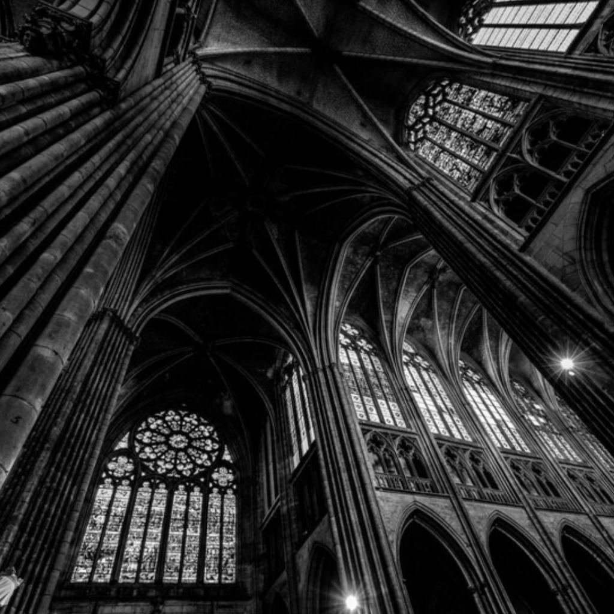

Contexto Histórico
A arte gótica surgiu na Europa durante o século XII e se estendeu até o início do século XVI, tendo como berço a França. Esse movimento artístico se desenvolveu em um período de grandes transformações sociais, políticas e religiosas, marcadas pela ascensão das cidades, o crescimento da burguesia e a maior centralidade da Igreja Católica na vida pública. O gótico é, em muitos aspectos, uma evolução do estilo românico, mas com características marcadamente diferentes, especialmente na arquitetura e na espiritualidade que inspirava as suas obras.
No contexto histórico da arte gótica, a Europa estava passando por um renascimento urbano. As cidades cresciam, impulsionadas pelo comércio e pelas feiras, e uma nova classe de mercadores e burgueses emergia, financiando obras e novas construções. Ao mesmo tempo, a Igreja Católica mantinha sua hegemonia sobre a vida espiritual, social e até política da Europa, e as catedrais góticas tornaram-se o símbolo máximo desse poder. Esses edifícios monumentais eram erguidos como espaços de culto, mas também como demonstrações de prestígio e poder das cidades e da fé cristã.
Características

A arte gótica é marcada por uma série de características que a diferenciam de outros estilos, especialmente o românico. Surgida no século XII, no contexto do crescimento das cidades e do fortalecimento da Igreja Católica, ela se destaca principalmente na arquitetura, mas também abrange escultura, pintura e outros tipos de arte. Aqui estão as principais características da arte gótica:
1 - Catedrais Góticas
As catedrais góticas são os exemplos mais icônicos da arquitetura medieval e representam o ápice do estilo gótico, surgindo entre o século XII e o XV. Elas eram, ao mesmo tempo, centros religiosos, sociais e culturais das cidades. Algumas das catedrais mais conhecidas incluem a Notre-Dame de Paris, a Catedral de Chartres, a Catedral de Reims e a Catedral de Colônia.
Essas catedrais se destacam por suas estruturas monumentais, repletas de inovações arquitetônicas que permitiam criar construções mais altas e luminosas do que as da época anterior, o estilo românico. Uma das principais características é a verticalidade, com torres, pináculos e arcos ogivais que dão a sensação de que o edifício está apontando para o céu, simbolizando a ascensão espiritual e a busca pelo divino.
Outra inovação fundamental foi o uso de contrafortes e arcobotantes, que transferiam o peso da estrutura para fora, permitindo que as paredes fossem mais finas e que pudessem abrigar grandes janelas de vitrais. O interior das catedrais góticas é vasto e impressionante, com uma sensação de amplitude e luz, o que reforçava a atmosfera de reverência e espiritualidade.
Além da arquitetura, as catedrais também eram adornadas com esculturas detalhadas, especialmente nas fachadas e nos portais, representando cenas da Bíblia, figuras de santos e elementos simbólicos da fé cristã.

2 - Vitrais Coloridos
Um dos elementos mais representativos da arte bizantina são os ícones, pinturas religiosas em painéis de madeira que retratam figuras sagradas. Eles eram usados tanto para adoração quanto para meditação.
- Ícones são representações de figuras sagradas, geralmente pintadas em painéis de madeira, usados tanto em igrejas quanto em lares para devoção pessoal. Acreditava-se que os ícones serviam como mediadores entre o mundo terrestre e o espiritual, e por isso tinham um papel central na adoração cristã ortodoxa.
- Função Simbólica: A luz que passava pelos vitrais era considerada uma manifestação da luz divina, iluminando o interior da catedral e criando uma atmosfera de espiritualidade.
- Função Didática: Os vitrais contavam histórias religiosas, como cenas da vida de Cristo, do Antigo Testamento e feitos de santos. Eles ajudavam a ensinar a população, grande parte analfabeta, sobre a fé cristã.
- Cores e Técnicas: Feitos com pedaços de vidro colorido, unidos por chumbo, os vitrais eram cuidadosamente desenhados para criar imagens detalhadas e vibrantes, com uma paleta de cores que realçava o ambiente sagrado.
- Rosáceas: Janelas circulares grandes e ricamente decoradas, frequentemente presentes nas fachadas principais das catedrais, como as famosas rosáceas da Catedral de Notre-Dame de Paris. Elas eram verdadeiras obras-primas de design e simbolismo.


Iluminuras
As iluminuras são miniaturas e ilustrações feitas em manuscritos, especialmente em livros religiosos, como a Bíblia, livros de horas e evangelhos. Elas foram uma forma de arte muito popular durante a Idade Média, e no período gótico, tornaram-se ainda mais detalhadas e coloridas. O nome "iluminura" vem do uso de ouro e prata para "iluminar" as páginas com brilho.
Essas ilustrações não serviam apenas para decorar os manuscritos, mas também para tornar o texto mais compreensível e significativo. Muitas vezes, as iluminuras representavam cenas bíblicas, passagens dos evangelhos ou figuras de santos, funcionando como uma forma visual de contar histórias e transmitir ensinamentos. Elas eram feitas com grande riqueza de detalhes, e as cores vibrantes e a precisão das linhas refletem o estilo gótico.
Essas ilustrações não serviam apenas para decorar os manuscritos, mas também para tornar o texto mais compreensível e significativo. Muitas vezes, as iluminuras representavam cenas bíblicas, passagens dos evangelhos ou figuras de santos, funcionando como uma forma visual de contar histórias e transmitir ensinamentos. Elas eram feitas com grande riqueza de detalhes, e as cores vibrantes e a precisão das linhas refletem o estilo gótico.
A arte da iluminura era geralmente executada por monges copistas em mosteiros ou por artistas encomendados por nobres e clérigos. As margens das páginas também eram muitas vezes decoradas com motivos florais, cenas da vida cotidiana ou figuras mitológicas, tornando os livros não apenas objetos de devoção, mas também obras de arte preciosas.
Exemplos Notáveis
- Catedral de Notre-Dame de Paris (França): A construção daCatedral de Notre-Dame de Paris foi iniciada no ano de 1163. A obra foi dedicada à mãe de Jesus Cristo, Maria, de quem se originou o nome Notre-Dame, que em português significa "Nossa Senhora". A estrutura em estilo gótico é considerada uma das mais tradicionais e antigas da capital francesa. A catedral localiza-se na praça Parvis, que fica na Île de la Cité, uma pequena ilha situada no meio do Rio Sena.
- Estátuas dos Apóstolos na Catedral de Chartres (França): As Estátuas dos Apóstolos na Catedral de Chartres, na França, são um dos exemplos mais importantes da escultura gótica, localizadas na parte externa da catedral, principalmente nos portais ocidentais, conhecidos como o Portail Royal. Essas esculturas, feitas entre os séculos XII e XIII, são notáveis pela sua beleza, detalhamento e pela transição que representam do estilo românico para o gótico.
Influência e Legado
A arte gótica influenciou profundamente a arquitetura, especialmente com suas catedrais monumentais, e trouxe inovações como os arcos ogivais e vitrais coloridos, criando espaços de espiritualidade e elevação. Sua ênfase no naturalismo e na expressividade também impactou a escultura e a pintura, contribuindo para a evolução artística que culminaria no Renascimento. Além disso, o estilo gótico inspirou o Neogótico no século XIX e continua presente na cultura popular, associado ao mistério e ao sobrenatural. Seu legado permanece visível na arquitetura, nas artes visuais e na cultura contemporânea.
O gótico se transformou em um símbolo da fantasia, do mistério e do sublime, influenciando movimentos culturais como o gótico literário, exemplificado em obras como Frankenstein de Mary Shelley e Drácula de Bram Stoker. Até hoje, o estilo gótico permeia a cultura popular, especialmente em filmes, música e moda, onde o termo "gótico" é associado a estéticas sombrias e misteriosas.
